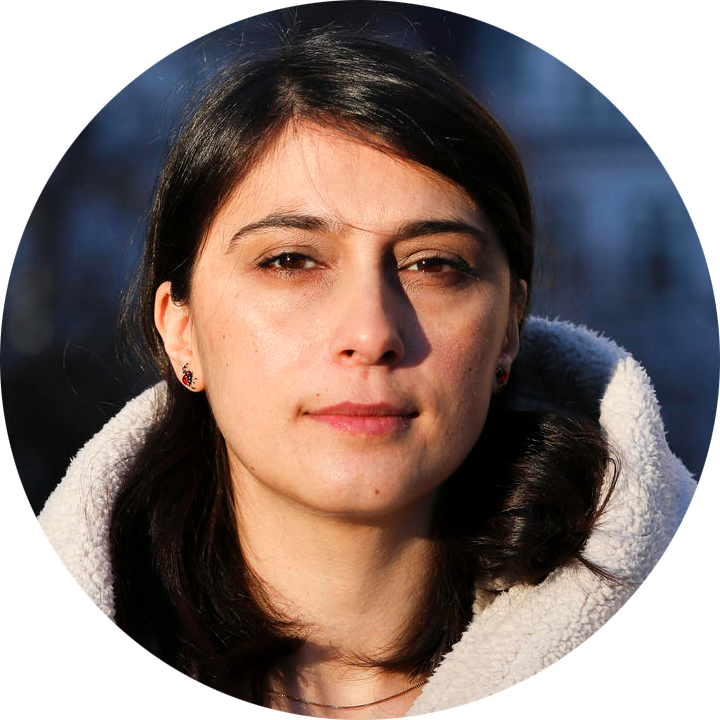

Overview
The "LLM for Science" BoF session aims to assemble industry professionals, academic researchers, and AI enthusiasts who share a common interest in the use of Large Language Models (LLMs) in various scientific domains. Our primary goal is to delve into a deeper exploration of how LLMs are transforming traditional research methods in fields such as Chemistry, Physics, Biology, Material Science, and beyond. We aim to discuss how LLMs are employed for automatic data analysis, experiment design, and streamlining research processes. The session would also concentrate on key challenges and ethical considerations brought forth by the integration of AI in scientific research. Furthermore, we will seek to understand the potential of AI as autonomous scientists and how this could reshape the landscape of future scientific research. Particular areas of discourse will include the application of AI in Natural Science, Math, Finance, and Social Science; the rise of scientific document modeling and understanding; and exploring AI for academic services like automatic paper review, academic writing aid, and paper recommendations.
Contact: LLM4Sci@gmail.com
Schedule (GMT-6)
- 4:00 - 4:30 PM: Talk by Rui Zhang
- 4:30 - 5:00 PM: Talk by Marti Hearst
- 5:00 - 5:30 PM: Talk by Tianfan Fu
Keynote Speakers

Prof. Heng Ji |
Prof. Zachary Ives |

Prof. Marija Slavkovik |
Organizing Committee
|
Wenpeng Yin |
Advisory Boards

Mark Gerstein |
Arman Cohan |